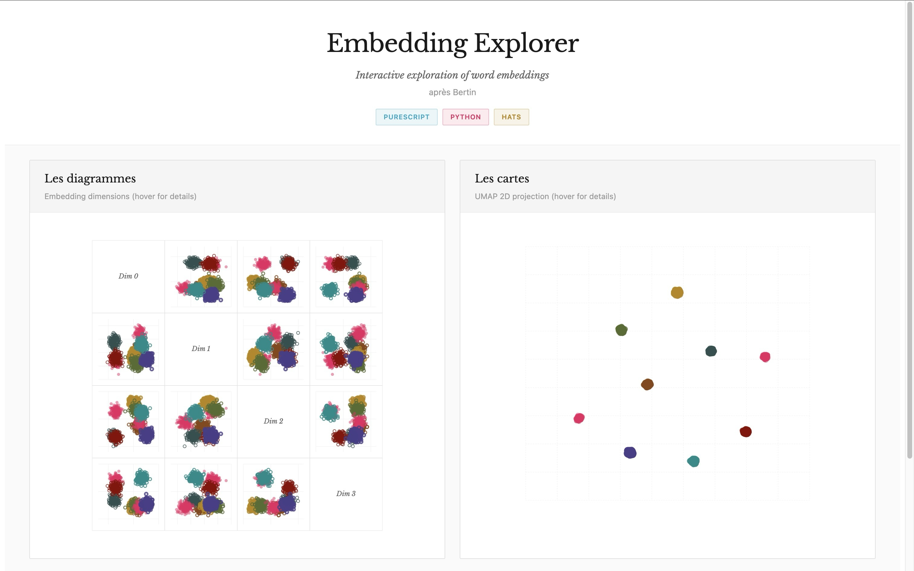
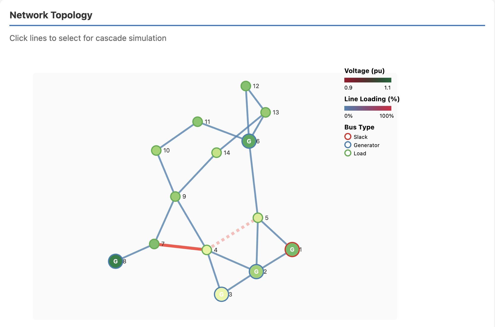
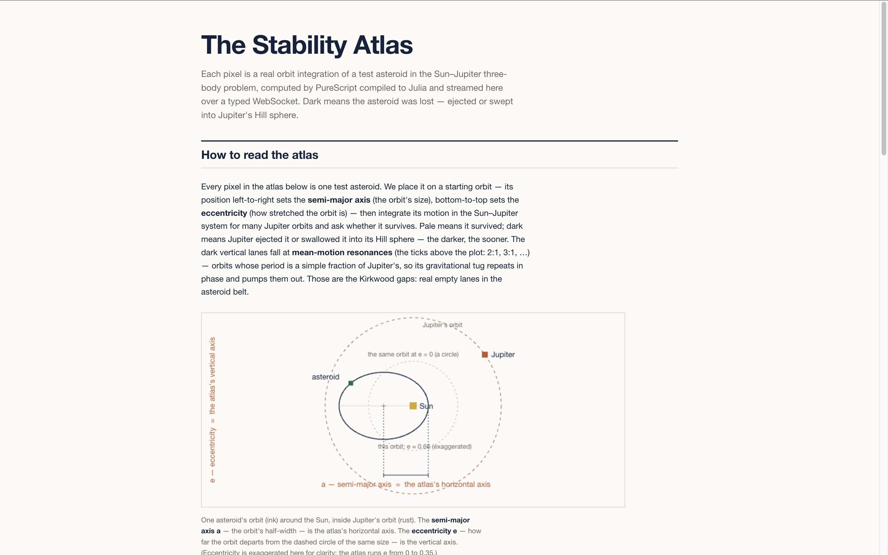
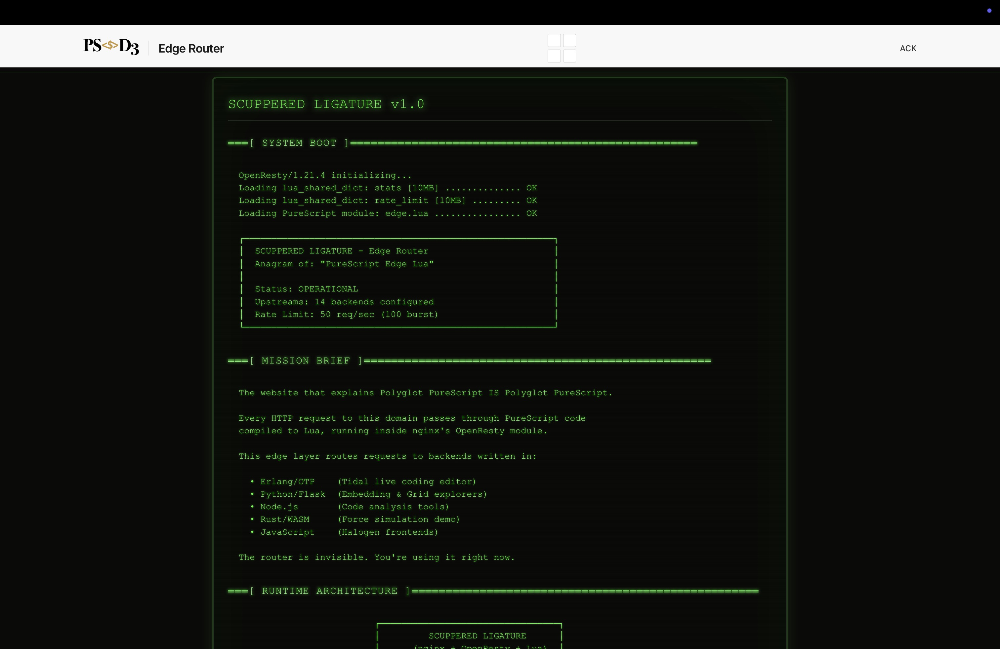

& all these other languages, too
Proof 1 — one app per runtime
Each exhibit is one real application, running on one backend — the type system intact all the way down to a foreign scientific library, a music rig, or an edge router. They live in their own repos; this site is the magazine that curates them.

Live PythonUMAP embeddings (umap-learn), 140 points, over typed Flask routes — PureScript reaching the ML/data stack.

Live PythonAC power-flow on IEEE case14 (pandapower): N-1 contingency, cascading failures, resilience metrics — the power-line-faults demo.

Deploy pending JuliaBasins of attraction — a heat-map sweep and click-to-stream orrery, computed PS-on-Julia and streamed over a typed WebSocket. The distributed compute is the showcase.
Video BEAMLive-coded music with OTP supervision on the BEAM. The full multi-runtime rig can't run in a tab — shown as a video.
Dogfood Wasm GCThe exhibit is the page you're reading — compiled by katsujukou's Wasm GC backend. The performance backend, proving itself by hosting the magazine.

Infra LuaThe edge router that fronts the rig — already PureScript → Lua in production. Quiet proof the Lua backend works.
Proof 2 — mixed runtimes, one type system
The backbone of the project is a differential corpus: a small, FFI-free set of
PureScript modules run on every backend, their output compared byte-for-byte.
Where they agree, the type system carried across. Where they diverge — bignum
Int, UTF-8 strings, float formatting — the difference is enumerated,
not papered over. Counterexamples are first-class content. The claim is not that
types guard the channel — it's that they shrink the space:
illegal states are unrepresentable, so a saboteur's blast radius is always 1.
module Main where
main :: Effect Unit
main = log (show (sumTo 1000000))Coming: the honesty layer, made playable — the Saboteur (attack the wires of a live four-runtime ring; score = blast radius, a game that's only fun without types), the Silhouette (the state space as a shape, one identical outline per typed runtime), and an interpretation-identity slot machine that round-trips 10,000 fuzzed values through every codec for zero divergence.
The constellation
Grouped by generator lineage — because the architecture predicts what a backend can cheaply do. Hover a letter in the acrostic to find its tile.
this project
Julia's numeric stack as FFI leaves. 422/426 differential parity.
Pythonthis project
Ubiquity + data tooling. Rebooted to 422/426 parity.
Gothis project
Single static binaries, goroutines. From-scratch; spike green.
Luacommunity
Embeddable scripting target.
C++Andy Arvanitis
Native C++/Go output.
Nathan Faubion / Arista
Chez Scheme via the backend-optimizer IR.
RacketFabrizio Ferrai
Racket — macros, language-building. Self-hosting in progress.
ESFaubion / Arista
Optimizing JS — the control column.
Everything we've gathered building these columns — the differential-suite contract, the ground rules that cost us time, per-backend toolchain notes, and the prior-art shelf — collected into one hub.
Writing a backend →